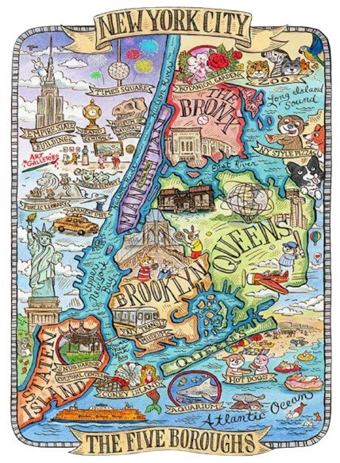

New York City holds more value than you think; it is a mosaic made of 8 million different tiles. From the quiet streets of Long Island City to the constant rush of the subway, every moment is a piece of a larger picture. Like the five boroughs themselves, each part of this city has its own color and rhythm, but together they create a single heartbeat. These photos resemble the fragments of that story. New York is a city of things unnoticed. It is a city with all the parts of a puzzle, but no box to show you the picture.